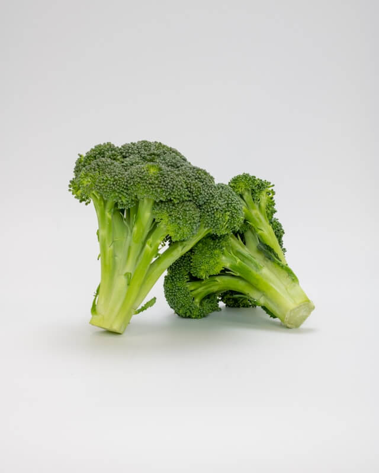

Elementos:
- Frutas
- Manzanas 🍎
Imagen de manzana, click en el enlace para obtener una receta
- Platano 🍌
Imagen de un platano, click en el enlace para obtener una receta
- Piña 🍍
 Imagen de una piña, click en el enlace para obtener una receta
Imagen de una piña, click en el enlace para obtener una receta
- Carnes
- Pollo 🍗
Imagen de un pollo, click en el enlace para obtener una receta
- Carne Molida
Imagen de carne molida, click en el enlace para obtener una receta
- Verduras
- Limon 🍋
Imagen de limones, click en el enlace para obtener una receta
- Zanahoria
Imagen de zanahorias, click en el enlace para obtener una receta
- Zanahoria 2
Imagen de zanahorias, click en el enlace para obtener una nueva receta con zanahorias
- Brocoli 🥦

Imagen de brocoli, este elemento no tiene receta, debido a su mal sabor. :)